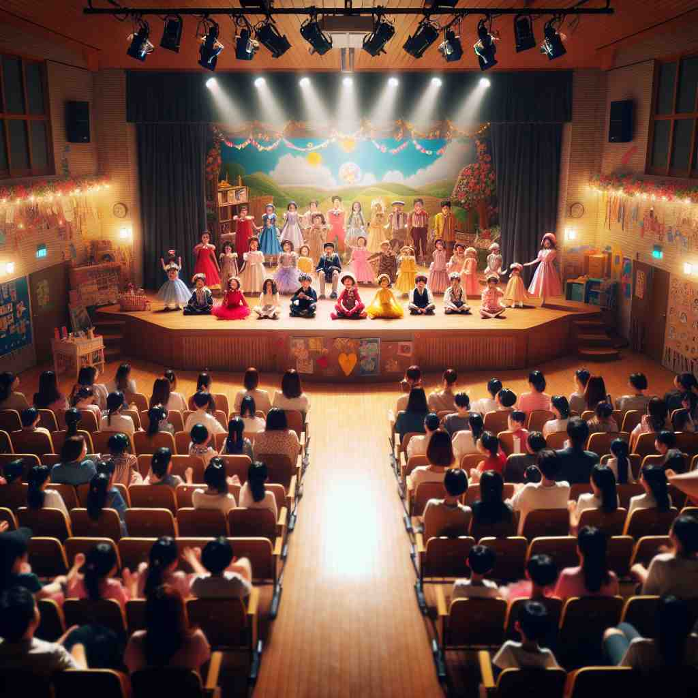

💬 The actors will perform on stage tonight.

💬 The artists will perform on stage at the festival tonight.

💬 The children are excited to perform on stage for their parents and friends.
💬 Actors will perform on stage tonight at the theater.
🔈 [steɪdʒ]
🗝️ n. a raised platform where people perform or speak
🖼️ 在一个灯光璀璨的剧院中，一位身穿华丽服装的演员站在舞台中央。他面向观众，自信地开始演讲，这个舞台是人们表演和发言的地方。
🔍 想象一个'舞台'（stage）作为核心概念。舞台是表演的平台，可以延伸理解为人生或事物发展的不同阶段。就像舞台上的表演被精心策划一样，'stage'也可以表示组织或策划事件。无论是在实际舞台上还是在比喻的人生舞台上，'stage'都代表了一个展示、发展或行动的平台或阶段。这个核心概念贯穿了'stage'的各种用法，帮助你更容易记住和理解它的多重含义。
💬 The actors will perform on stage tonight.
💬 The artists will perform on stage at the festival tonight.
💬 The children are excited to perform on stage for their parents and friends.
💬 Actors will perform on stage tonight at the theater.
🌳 单词 'stage' 源自拉丁语 'stagnum'（池塘, 静止水面），后演变为法语 'estage'，意为活动或表演场所。常指发展的阶段或剧院演出的舞台。
💡 记忆 'stage' 时，可以联想为 '停留在某个阶段或位置' 的意思，比如在一个发展阶段，或站在舞台上表演的场景。
🗝️ n. a period or step in a process, activity, or development
🖼️ 在一间实验室里，科学家正观察培养皿中的细胞。当她记录下最新的发现时，她解释道："我们现在处于研究的关键阶段，需要小心观察每一步的发展。"
💬 We're in the early stages of planning our wedding.
❓ 类比舞台上不同的场景或表演环节
🗝️ v. to organize and present a performance or event
🖼️ 在一个热闹的城市广场上，一个音乐节正在紧锣密鼓地筹备。工作人员忙碌地搭建舞台、调整灯光，准备好明天的演出，展示了如何组织和呈现一场活动。
💬 The theatre company is staging a new play next month.
❓ 将某事安排在"舞台"上展示
🗝️ v. to plan or devise, especially in a dishonest way
🖼️ 在一个隐蔽的会议室中，一群人正在策划一场阴谋。他们悄声交流，讨论如何精心安排这次行动，展示了不太光明正大的策划含义。
💬 They staged a protest to draw attention to their cause.
❓ 如同在"舞台"上策划一场表演
🗝️ n. a place or scene of action or occurrence
🖼️ 在一场激烈的篮球比赛中，球场上充满了紧张的氛围。球员们奋力拼搏，而这个球场就是他们奋斗的舞台，见证了每一个动作和瞬间。
💬 The city streets became the stage for a dramatic car chase.
❓ 将现实世界比作一个大"舞台"
🗝️ n. a regular stopping place on a route, especially for stagecoaches
🖼️ 在一条古老的乡村道路上，一辆马车缓缓停在一个驿站，这里是车夫和乘客经常停留休息的地方，服务于长途跋涉的旅客。
💬 The stagecoach made several stages on its journey across the country.
❓ 舞台上的一站演变为旅程中的一站